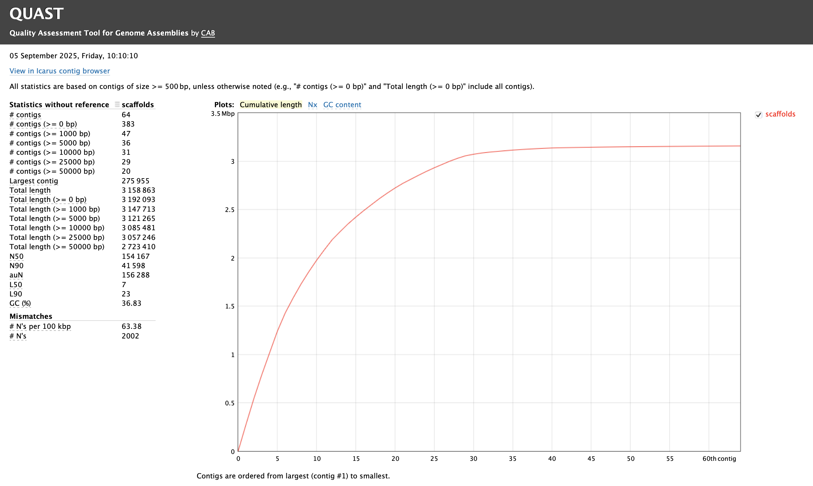

Part 2: Genome assembly
You need to have gone through Part 1: Read cleaning before starting this practical.
1. A brief assembly example
Many different pieces of software exist for genome assembly but as mentioned in the earlier lectures we will be using SPAdes.
Again for this practical you will be using the remote AWS computers created for you so please ssh back into these!
Task
Following the same procedure from the first read cleaning practical
Part 1: Read cleaning, create a new main directory for today's practical (e.g., 2025-09-23-assembly), the input, tmp, and results subdirectories, and the file WHATIDID.txt to log your commands.
To help get you started
mkdir 2025-09-23-assembly
Your directory hierarchy should look like the following
Terminal
2025-09-23-assembly
├── input
├── tmp
├── results
└── WHATIDID.txt
Next lets link the cleaned reads from yesterdays practical into our input subdirectory. We will be using these clean reads to create our assembly today!
Task
Use the following commands to achieve this!
cd ~/2025-09-23-assembly
cd input
ln -s ~/2025-09-22-read_cleaning/results/reads.pe*.clean.fq .
cd ..
Question
- Did you note the use of
*in the above command? - What does it do? (Hint: the symbol
*is called a wildcard)
Task
To assemble our cleaned reads with SPAdes, run the following line: (This will take about 10 minutes - please complete the task below in this time)
spades.py -o tmp -1 input/reads.pe1.clean.fq -2 input/reads.pe2.clean.fq
Like any other assembler, SPAdes creates many files, including a
scaffolds.fasta file that is likely to be used for follow-up
analyses.
Copy this file to your results directory:
cp tmp/scaffolds.fasta results/
Take a look at the contents of this file (e.g., to see the first 10 lines, use
head results/scaffolds.fasta, or tail results/scaffolds.fasta to see the
last 10 lines).
Question
Does it contain a lot of NNNN sequences? What do you think might be the reason for that? (Do not worry if your assembly does not contain any NNNN sequence.
Task
While waiting for spades to run please move on to the Accessing Apocrita practical.
To get an idea of some challenges associated to _de novo_genome assembly and the approaches used to overcome them from the following papers:
- Towards complete and error-free genome assemblies of all vertebrate species. (Rhie et al 2021)
- Long walk to genomics: History and current approaches to genome sequencing and assembly. (Giani et al 2020).
- A hybrid approach for de novo human genome sequence assembly and phasing. Mostovoy et al (2016).
- Genetic variation and the de novo assembly of human genomes. Chaisson et al 2015 NRG
2. Quality assessment
How do we know if our genome is good?
"... the performance of different de novo genome assembly algorithms can vary greatly on the same dataset, although it has been repeatedly demonstrated that no single assembler is optimal in every possible quality metric [6, 7, 8]. The most widely used metrics for evaluating an assembly include 1) contiguity statistics such as scaffold and contig N50 size, 2) accuracy statistics such as the number of structural errors found when compared with an available reference genome (GAGE (Genome Assembly Gold Standard Evaluation) evaluation tool [8]), 3) presence of core eukaryotic genes (CEGMA (Core Eukaryotic Genes Mapping Approach) [9]) or, if available, transcript mapping rates, and 4) the concordance of the sequence with remapped paired-end and mate-pair reads (REAPR (Recognizing Errors in Assemblies using Paired Reads) [10], assembly validation [11], or assembly likelihood [12])." - Wences & Schatz (2015)
2.1 Simple metrics
An assembly software will generally provide some statistics about what it did. But, note that the output formats may differ between assemblers. Quast, the Quality Assessment Tool for Genome Assemblies is a tool designed to generate a standardized report.
Task
Run Quast on the scaffolds.fasta
file without special options to get the basic statistics:
cd ~/2025-09-23-assembly/results
quast.py scaffolds.fasta
Have a look at the report (pdf or html) generated by Quast (copy the Quast's
output directory to ~/www/tmp and access through your browser).
cp quast_results/latest/report.html ~/www/tmp

Question
- What do the values in the table mean?
- For which values is higher better, and for which ones is smaller better?
In some cases, we have prior knowledge about the expected percentage of GC content, the number of chromosomes, and the total genome size. This information can be compared to the statistics present in Quast's report.
Task
See if you can find the expected GC content of the complete Fire Ant genome? Does the GC content of the assembly match what is expected?
2.2 Biologically meaningful measures
Unfortunately, with many of the simple metrics, it is difficult to determine whether the assembler did things correctly, or just haphazardly stuck lots of reads together.
We often have other prior information about what to expect in this genome. For example:
- if we have a reference assembly from a not-too-distant relative, we can expect that large genome parts will be organised in the same order, i.e., synteny.
- If we independently created a transcriptome assembly, we can expect that the exons making each transcript will be mapped sequentially onto the genome (see TGNet for an implementation).
- We can expect different patterns of gene content and structure between eukaryotes and prokaryotes.
- Pushing this idea further, we can expect a genome to contain a single copy
of each of the "house-keeping" genes found in related species. This is
applied in BUSCO (Benchmarking Universal Single-Copy Orthologs).
Note that:- BUSCO is a refined, modernized implementation of CEGMA (Core Eukaryotic Genes Mapping Approach). CEGMA examines a eukaryotic genome assembly for the presence and completeness of 248 "core eukaryotic genes".
- Quast also includes a "quick and dirty" method of finding genes.
- We can expect that the different scaffolds in the genome have a unimodal distribution in sequence read coverage. Similarly, we can expect that the percentage of GC content will be unimodally distributed among scaffolds. Using this idea, the Blobology approach determined that evidence of foreign sequences in Tardigrades is largely due to extensive contamination rather than extensive horizontal gene transfer Koutsovoulos et al 2016.
It is important to understand the concepts underlying these different approaches.
3. In your own time
Try to figure out what are the tradeoffs between de bruijn graph and overlap-layout-consensus assembly approaches.